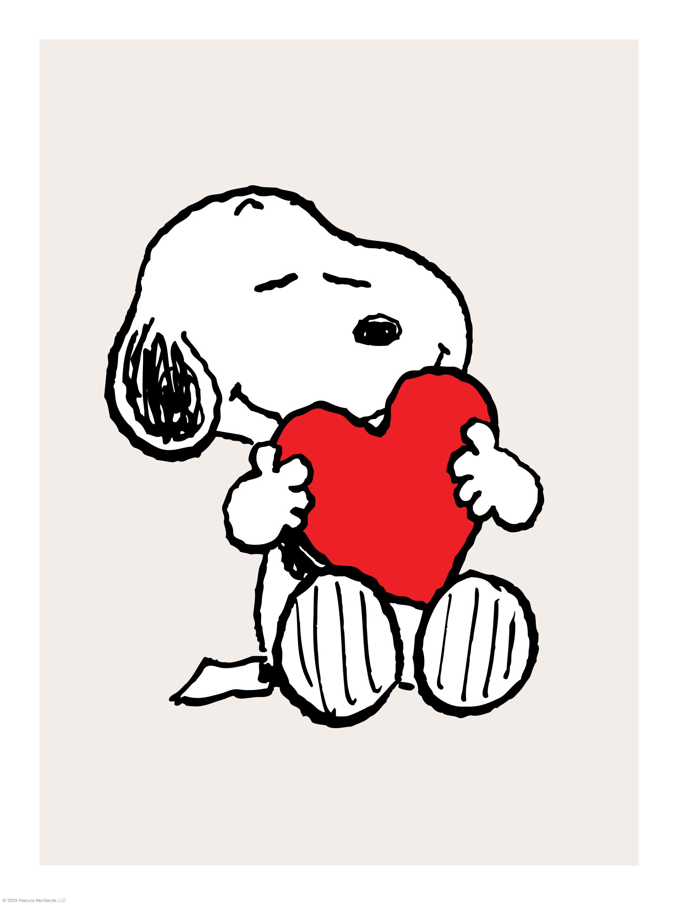
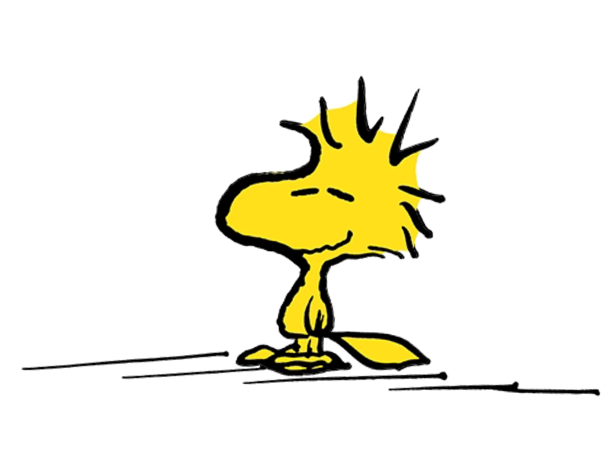

Snoopy
Snoopy é o carismático beagle criado por Charles Schulz para a tirinha Peanuts. Inteligente, imaginativo e cheio de personalidade, ele é famoso por suas aventuras fantásticas e seu humor único. Sempre divertido e espirituoso, encanta crianças e adultos, transmitindo criatividade, charme e amizade em cada história.
Woodstock
Woodstock é o pequeno pássaro amarelo e inseparável amigo de Snoopy na tirinha Peanuts. Apesar de seu tamanho diminuto, ele é cheio de personalidade, corajoso e leal, sempre acompanhando Snoopy em suas aventuras imaginativas. Comunicando-se por piados que só Snoopy parece entender, Woodstock representa amizade, companheirismo e humor, conquistando fãs com sua ternura e carisma.
- Curiosidade: O nome Woodstock vem do festival musical de 1969!